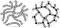

thermosetting

Definition: In materials science, a thermosetting polymer, often called a thermoset, is a polymer that is obtained by irreversibly hardening ("curing") a soft solid or viscous liquid prepolymer (resin). Curing is induced by heat or suitable radiation and may be promoted by high pressure or mixing with a catalyst. Heat is not necessarily applied externally, and is often generated by the reaction of the resin with a curing agent (catalyst, hardener). Curing results in chemical reactions that create extensive cross-linking between polymer chains to produce an infusible and insoluble polymer network.
Source: Wikipedia
Wikipedia Page (Something wrong with this association? Let us know.)
Wikidata Page (Something wrong with this association? Let us know.)